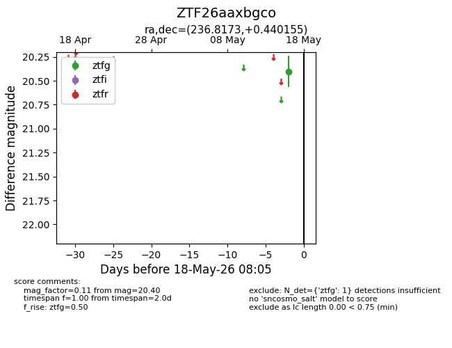
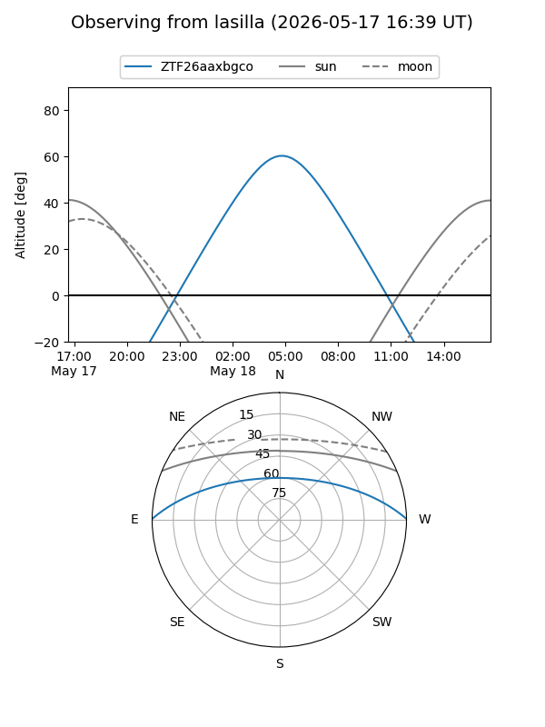
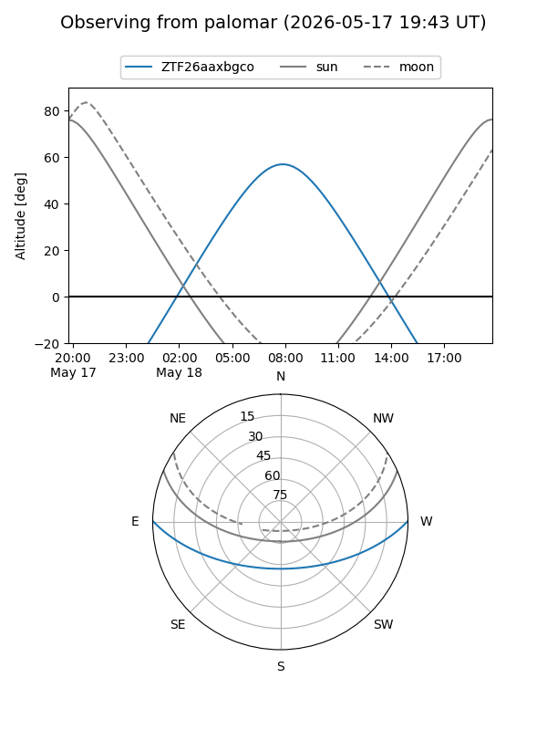

ZTF26aaxbgco
Target ZTF26aaxbgco at 2026-05-18 08:06
Aliases and brokers:
FINK: link
Lasair: link
ALeRCE: link
alt names
ZTF26aaxbgco (ztf,fink_ztf)
Coordinates:
equatorial (ra, dec) = 236.8173,+0.44016
equatorial (HMS+DMS) = 15:47:16.16,+00:26:24.56
galactic (l, b) = (8.0864,+40.10140)
Flags:
Photometry:
last ztfg=20.40
1 ztfg detections
Lightcurve

Visibility


Additional plots